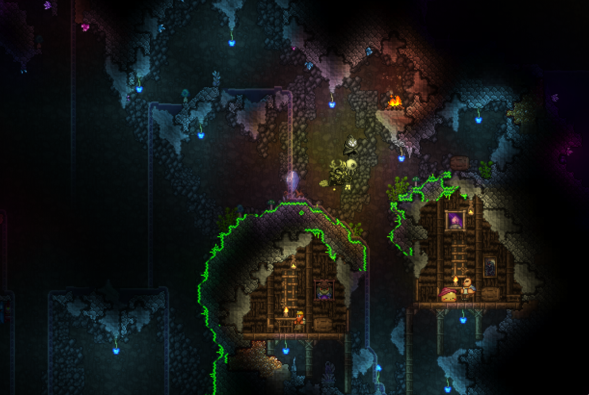

The Point of Terraria
Combat is a huge part of Terraria's gameplay loop. Even if you defeat the seemingly ultimate boss down in Hell, all that actually does is permanently sets your world to hard mode, adds more bosses, and marks the half-way point in your game. These bosses, among other things and areas in Terraria, provide you with various materials, weapons, and trinkets that grant you abilities and buffs. There are so many of these, that classes of player can be formed out of the different combinations you use, each with strenghs and weaknesses. The bosses themselves also have unique fighting styles, such as Queen Bee (seen above) who uses fast arial attacks, poisonous stinger projectiles, and bee minions to distract you. All of this can get pretty complex and may seem overwhelming at first. But if you're willing to use a guide or be patient and figure things out yourself, you'll discover how addicting the loop of exploring, fighting, and upgrading your gear is.
The Other People in Your World
Another important part of Terraria is that you're not alone (and I'm not talking about the monsters). Your world is inhabited by various NPCs who will come to visit you. Some will trade items, but some will move in if you meet the right requirements (like defeating a certain boss). A few of them are necessary to further your progression through the main campaign, like Dryad. In order to have them move in, you need to build a room before-hand. You can actually build a livable room just about anywhere, even underground (see above). Note that some NPCS prefer to live in certain biomes, and if you make them happy by doing this, they lowing their prices on valuable items. Making them unhappy on the other hand, will make them jack up those prices. Unlike combat, NPC housing it a lot simpiler, but with access to so much furniture and building blocks, there's all kinds of room to be creative with your construction.